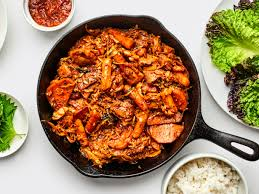

Dakgalbi Recipe

Description
Dakgalbi is a Korean dish that is made with chicken and vegetables. It is a popular dish in Korea and is often served with rice.
Ingredients
- 1 pound of chicken
- 1 onion
- 1 green bell pepper
Steps
- Cut the chicken into small pieces.
- Cut the onion and green bell pepper into small pieces.
- In a pot, add the chicken and water and bring to a boil.
- Add the onion and green bell pepper and cook until the chicken is cooked through.
- Serve with rice and kimchi.